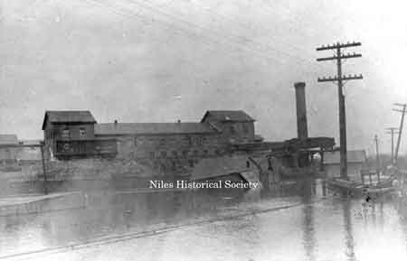

Ward-Thomas Museum


Niles Firebrick Company
Ward — Thomas
Museum
Home of the Niles Historical Society
503 Brown Street Niles, Ohio 44446
Click here to become a Niles Historical Society Member or to renew your membership
Click on any photograph to view a larger image, click on image again to zoom into photograph.
|
John R. Thomas, 1834-1898. Original Niles Firebrick Company plaque. PO2.566
1918 map shows the location of the Niles Firebrick property. |
Niles
Firebrick Company. Niles Firebrick was manufactured by the Niles Fire Brick Company since it was created in 1872 by John Rhys Thomas until the company was sold in 1953 and completely shut down in 1960. Capital to establish the company was provided by Lizzie B. Ward to construct a small plant across from the Old Ward Mill which was run by her husband James Ward. Thomas immigrated in 1868 from Carmarthenshire in Wales with his wife and son W. Aubrey Thomas who served as secretary of the company until he was appointed as representative to the U. S. Congress in 1904. The company was managed by another son Thomas E. Thomas after J.R. Thomas died unexpectedly in 1898. The Thomases returned the favor of their original capitalization by purchasing an iron blast furnace from James Ward when he went bankrupt in 1879. Using their knowledge of firebrick they were able to make this small furnace profitable. Later they used it to showcase the value of adding hot blast to a furnace using 3 ovens packed full of firebrick. The furnace was managed by another son John Morgan Thomas. Fire brick was first invented in 1822 by William Weston Young in the Neath Valley of Wales, in the next county east of Llanelli where the Thomas family lived before emigrating to Niles. It is recorded that Firebrick was made in the Llanelli area in 1870 but the market was highly cyclical and it was difficult to make a living at it. From 1937 to 1941 the company worked to prevent the United Brick Workers Union (CIO) from organizing the workers in preference for an independent union favored by management. The CIO union prevailed. In spite of this episode the company had good relations with the employees and tried to keep them employed during economic downturns. The "Clingans" mentioned in that referenced interview were Margaret Thomas Clingan, a daughter and John Rhys Thomas Clingan, a grandson, who took over management of the Company when T.E. Thomas died in 1920. Patrick J. Sheehan worked various jobs at Niles Fire Brick Company from age 13 up until 1897 when he was appointed superintendent of the plant. When Sheehan started with the company they occupied a plant covering a floor space of 3,600 square feet, two kilns, and the output was 640,000 bricks per year. The plant was moved to Langley street eighteen months afterward, and the output increased to 1,200,000. This Langley street works was constantly added to each year, until the output was 6 million and in 1905 they built the "Falcon" plant on the site formerly occupied by the Langley street plant. Which doubled production to 12 million per year. By 1955 the output was 25 million. The new type of blast furnaces introduced after WWII made firebrick obsolete and the plant closed and was dismantled in 1974-75. The work of molding and firing brick was highly
labor-intensive. Immigrants from Southern States and European
countries especially Italy were sought to perform the work under
working conditions that were long and hard.  |
|
| |
||
Location of original Niles Fire Brick Company in 1882. Location of Plant No. 1 and plant
No. 2 Aerial view of Niles Firebrick Company, No. 2 Plant in 1956. The firebrick plant No. 2 was dismantled in 1974-75.
|
Niles Daily Times September 9, 1934 Today, The Niles Firebrick Company, the second oldest industrial works in the city, value a nationwide reputation for its high grade Fire Clay and Silica refractories. Their products are used in open hearth blast furnaces, locomotive engines and for all purposes that high grade refractory brick are used. The Niles First Firebrick Company was founded in 1872 by John R. Thomas on the present site of the modernized No. 2 plant. In 1882 the plant was moved to a site on the Erie Railroad on Langley Street and The Falcon Iron and Nail Company plant was built on the former site of the Niles Fire Brick Company at the mouth of Mosquito Creek (where it enters the Mahoning River). After the Falcon Iron & Nail Company was razed in the 1900s, this site was repurchased by The Niles Firebrick Company and in 1905 the No. 2 plant was built there. In 1910, the plant was again modernized and a complete new Silica Brick Plant was added. In 1926 and 1929 further expansion in the way of additional kilns, buildings and machinery were made. The original plant had an output of 600,000 bricks yearly. The present modernized fire clay and silica brick plants have a capacity of 20,000,000 brick. The present No. 2 works, located along the Pennsylvania railroad at East Park Avenue, is completely equipped modern fire brick plant, with a working unit of about 300 men. The No. 1 plant, located along the Erie and B&O railroads, with capacity operations employs about 100 men. Clay mines in Pennsylvania and silica quarries in Ohio operated by this company give employment to approximately 50 men. J.M. Thomas is president of the organization; J.R.T. Clingan, vice-president; Mary T. Waddell, secretary-treasurer; F.E. Gilbert, assistant secretary-treasurer; and P.J. Sheehan, general manager. Mr. Sheehan has been in the employ of the company since 1881. Directors are: John M. Thomas, W. Aubrey Thomas, John R.T. Clingan, Margaretta Clingan, Mary T. Waddell. The plant has remained in the Thomas family through four generations. Niles Daily Times August 24, 1961 When first founded, the firm supplied brick used in the puddling process of making wrought iron. Then when the open hearth was invented, the company switched to a new type of brick which was to bring it fame and respect throughout the steel industry. The refractories industry grew slowly until the 1870s when the Niles plant was established. Total U.S. production in 1870 was about 60 million bricks a year. By 1900 it was up to 391 million and by 1926 it was up to 1,300,000,000 per year. By this time, the Niles firm had found it feasible to construct a newer and more modern plant, Niles No. 2 on the south side of East Park Avenue. Because of its modern and more efficient facilities which boosted the annual production to 17,000,000 bricks a year, No. 2 became the more profitable operation and “Old No. 1” was closed in 1930. Since that time, the ancient plant gradually fell into a state of disrepair through inactivity until it was decided recently to tear it down. The sentimentalists might say it will be missed,
but that can hardly be the case since the plant has not been used
in 30 years. But it is safe to say that it cannot be demolished
without some of those who worked there feeling a few pangs of
nostalgia. |
|
| |
||
|
Aerial view of No. 2 plant in 1947 |
No. 1 Buildings in disrepair. |
No. 1 kiln in disrepair. |
|
|
||
Wood beams which once supported the roof of a kiln now stand exposed, silhouetted against the sky as the kiln is torn down In the background is the smoke-blackened exterior of Plant No. 1. |
Inside a kiln at No. 1 plant shows the thousands of bricks that went into its construction. Despite its age, this one is still in relatively good state of repair and might still be used in an emergency. |
Weed-covered and rusted railroad tracks still point their rails at the frame buildings of “old No. 1.” It was the Niles Firebrick Company as much as any other firm, that showed the industrial world that Niles, located as it is near transportation lines, was a good manufacturing center. These Niles tracks carried Niles bricks to all the large cities and steel centers in the east and Midwest. |
This smokestack rising from a kiln at the Niles Firebrick Company also helped thousands of smokestacks to later rise from steel mills all over the eastern United States. The refractory bricks made at this Niles plant were used to build the furnaces which produced millions of tons of steel and provided employment for thousands. |
The old gives way to the new as a giant steam shovel batters an old kiln to bits and picks up the pieces. All the kilns and buildings at Plant No. 1 are being torn down after more than 30 years of inactivity. The plant was located along the Erie Railroad tracks, just north of East Park Avenue. |
|
| |
||
|
Example of “company houses” built by the Niles Firebrick Company for its workers and familythat were located near the factory. |
 |
Niles Daily Times October 27, 1976 Michael Patrone of 235
Langley Street wrote a letter to the board asking that it consider
establishing a historical marker at his house, which was the home
of John R. Thomas, founder of the Niles Firebrick Company. |
|
Old No. 1 plant of the Niles Firebrick company looked like this in 1880, just eight years after it was founded by J.R. Thomas. These wooden buildings were destroyed by fire and rebuilt in 1905. They stood for 56 years until razing operations were begun this month (8.24.61). This original plant produced about 500,000 handmade bricks a year and helped make the building of America’s steel industry possible. PO11.893 |
A photograph of the Falcon Iron & Nail factory employees. PO2.558 |
Mahoning River with Niles Firebrick |
These were the men who helped build the Niles Firebrick Company, Niles oldest industry. They were the employees at No. 1 Plant in 1890. Standing (L-R): Louis Rice, Supt. P.J. Sheehan, Joe Nichol, Charles Ludwig, Jean Euly, Lawrence Pallante, Mike Infant, John Watkins, and Thomas E. Thomas, one of the owners and general manager of the plant. Seated (L-R): John Mullen, Joseph Pallante, Joe Williams, Jim Chero, Tom Lowry and John Seaton. P.J. Sheehan, general manager. Mr. Sheehan has been in the employ of the company since 1881. |
A picture of a Niles Firebrick, manufactured by the Niles Firebrick Company. PO2.425
|
|
Sample book of Niles Firebrick Company. |
1924 photograph of Niles Firebrick samples. |
Sample page of Niles Firebrick Company. |
Aerial view of the Niles Firebrick kilns. |
Aerial view of the Niles Firebrick kilns. PO2.474 |
Aerial view of the Niles Firebrick kilns. |
PRR yard with Niles Firebrick
in background. |
1960 view of Niles Firebrick Company. PO2.494.25 |
1960 view of Niles Firebrick Company |
A photo of the yard at the Niles |
Niles Firebrick pattern shop
on Langley |
One of a series of pictures taken
by Mike Patrone during the dismantling of the Niles
Firebrick and its surroundings. August, 1961. |
Taken on March 1, 1921, this photo shows the Hot Dry floor of the of the No. 1 plant of the Niles Firebrick Company. The floor space is occupied by these bricks for two weeks before they are deemed sufficiently dry to be used. PO2. 433
|
This photo shows the Hot Dry floor of the of the No. 1 plant of the Niles Firebrick Company being demolished in 1961.
|
1946 Niles Firebrick Company payroll stub of Joseph Ciminero. |
|
|
||


{kind=link}
{kind=link}
{kind=link}
{kind=link}
{kind=link}
{kind=link}
{kind=link}
{kind=link}
{kind=link}
{kind=link}
{kind=link}
{kind=link}
{kind=link}
{kind=link}
{kind=link}
{kind=link}
{kind=link}
{kind=link}
{kind=link}
{kind=link}
{kind=link}